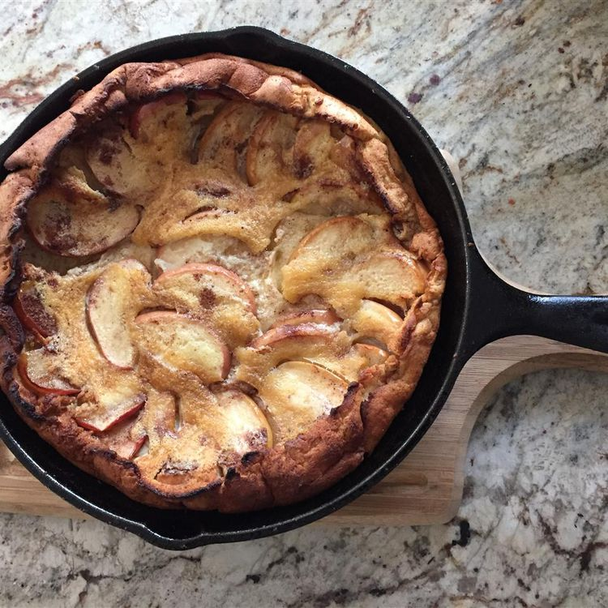

German Apple Pancake

Description
This German apple pancake, often called a Dutch baby, is a fantastic recipe for those special moments. If you're short on time, you can prep it the night before and just throw it in the oven when you're ready. It looks amazing too!
Ingredients
- 4 large eggs
- ½ cup unbleached all-purpose flour
- 1 tablespoon sugar
- ½ teaspoon baking powder
- 1 pinch salt
- 1 cup milk
- 1 teaspoon vanilla extract
- 2 tablespoons unsalted butter, melted
- ½ teaspoon ground nutmeg
- ¼ cup unsalted butter
- ½ cup white sugar, divided
- ½ teaspoon ground cinnamon
- 1 large tart apple - peeled, cored and sliced
Steps
- Mix together eggs, flour, 1 tablespoon of sugar, baking powder, and salt in a big bowl. Slowly add in the milk while stirring continuously.
Then, toss in the vanilla, melted butter, and ½ teaspoon of nutmeg. Let the batter sit for about 30 minutes or even overnight if you have time.
- Get your oven ready by preheating it to 425°F (220°C).
- In a 10-inch oven-safe skillet, melt some butter and make sure to brush it up the sides of the pan. In a small bowl, mix ¼ cup of sugar with cinnamon and ½ teaspoon of nutmeg, then sprinkle this mixture over the melted butter.
Arrange apple slices in the pan and top them with the remaining ¼ cup of sugar. Heat the pan on medium-high until it starts bubbling, then carefully pour the batter over the apples.
- Bake it in the preheated oven for 15 minutes. After that, lower the heat to 375°F (190°C) and bake for another 10 minutes. Once done, slide the pancake onto a serving plate and cut it into wedges.